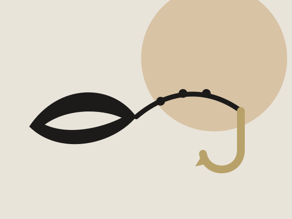
Retorica
L'arte di persuadere con parole e immagini.
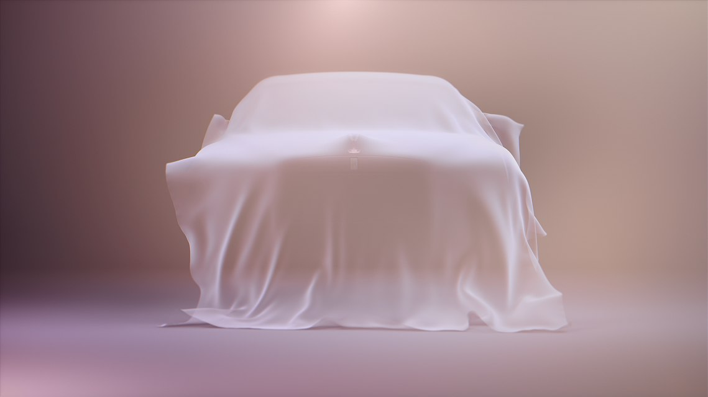
Seta e legno. Rolls-Royce e Taffo: il sogno e la risata, due modi opposti di farsi ricordare.
Analizziamo due modi opposti di fare pubblicità con gli strumenti della retorica e della semiotica, e li collochiamo nella classificazione di Jean-Marie Floch. Da una parte la perfezione silenziosa di Rolls-Royce, dall'altra l'ironia nera di Taffo.
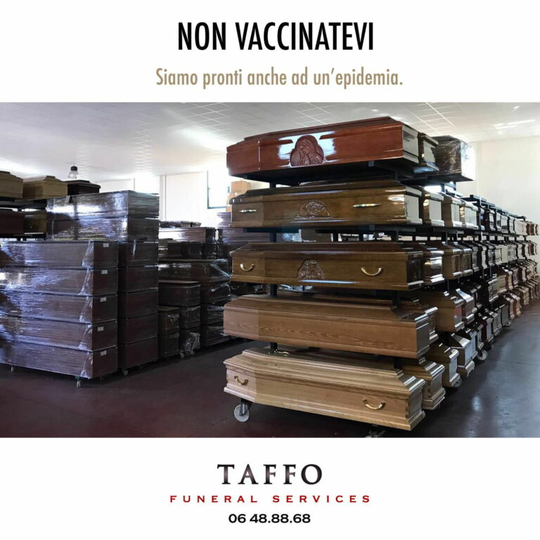
dal 2016 Ridere della fine Taffo Funeral Services, post e manifesti
L'arte di persuadere con parole e immagini.
Studia come ogni cosa produce significato.

La forma e il concetto che richiama: una stella dorata → il successo. (Saussure)
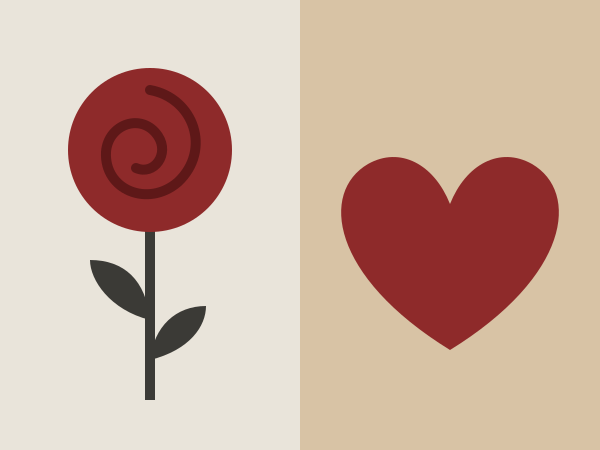
Ciò che si vede e ciò che evoca: una rosa → l'amore. (Barthes)

Un'immagine al posto di un'idea: l'auto avvolta nella seta.
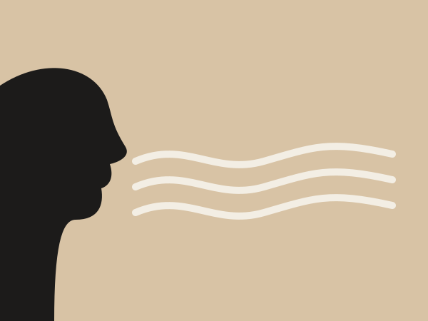
Un paragone con «come»: «silenzioso come un respiro».
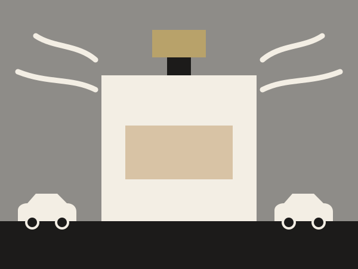
Un'esagerazione: un profumo che ferma il traffico.
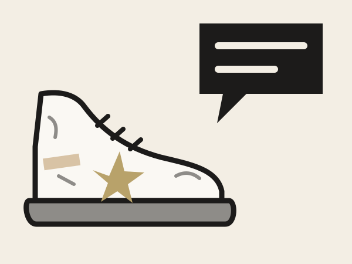
Un oggetto che fa cose umane: una scarpa che racconta.

Idee opposte accostate: vita / morte.

Dire il contrario di ciò che si intende.

Sensi mescolati: «un silenzio vellutato».
Il semiologo Jean-Marie Floch (1947–2001) divide la pubblicità in quattro tipi.
Floch ci insegna che non conta solo cosa si vende, ma il tipo di discorso che si sceglie per venderlo.
Ghost – Teaser film (2020). Mostrare l'essenza di un'auto senza mostrarla.

Rolls-Royce nasce dall'incontro del 1904 tra Charles Rolls e Henry Royce. Nel 1907 la Silver Ghost la consacra come "la migliore auto del mondo"; dal 1911 lo Spirit of Ecstasy, la statuetta sul cofano, ne è il simbolo. Oggi Rolls-Royce Motor Cars appartiene al gruppo BMW e produce a mano a Goodwood, in Inghilterra.
Perfezione, silenzio, esclusività, su misura.
Nel 2020 Rolls-Royce lancia la seconda generazione della Ghost, il suo modello più venduto. Il design segue la filosofia "Post Opulence": un lusso che rinuncia all'ostentazione e punta su purezza e sostanza. Il lancio avviene online il 1° settembre, in piena pandemia, preceduto da una serie di teaser.
Sfida creativa: mostrare l'essenza dell'auto senza mostrarla. Soluzione: un velo di seta digitale che scivola sulla carrozzeria e rivela cinque dettagli, uno alla volta, fino allo Spirit of Ecstasy. La musica cresce insieme alla rivelazione.
28,4 mln persone raggiunte650.000 visualizzazioni4 giorni
Al centro del racconto, lo Spirit of Ecstasy.
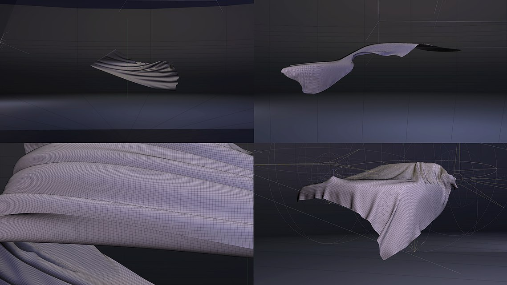

Un fondo nudo sfumato di rosa-malva, seta chiara e perlacea. Luce radente che scolpisce le forme. Inquadrature strette, lente, centrate: nessuna strada, nessun paesaggio, nessuna persona. L'auto esiste in uno spazio fuori dal mondo. Il nero di queste pagine è una scelta grafica del sito, non il colore del film.
La seta è il tessuto più nobile, legato alla storia del lusso. Connota morbidezza, leggerezza, silenzio, preziosità. È anche il lenzuolo del "fantasma": richiama il nome Ghost e l'idea di apparizione.
La seta e la carrozzeria condividono le stesse qualità: fluidità delle linee, superfici senza imperfezioni, movimento senza sforzo. Il tessuto diventa il ritratto dell'auto: se la seta è così, anche la Ghost lo è.
Strategie persuasive. Attesa e mistero (teaser), esclusività (ciò che non si vede è riservato a pochi), eleganza estetica al posto delle informazioni tecniche.
| Si vede (denotazione) | Si intende (connotazione) |
|---|---|
| Un tessuto chiaro che si muove | Purezza, leggerezza, perfezione |
| Un'auto in parte nascosta | Mistero, esclusività, attesa |
| Un fondo nudo, senza strada né orizzonte | Un luogo fuori dal mondo, quiete, sogno |
| Lo Spirit of Ecstasy | Tradizione, eredità, status |
Rolls-Royce non ci mostra un'auto: ci fa immaginare la perfezione.
Non dice nulla di pratico: niente prezzo, motore o consumi. Avvolge l'auto in un'aura di sogno e la trasforma in un simbolo di perfezione. Il prodotto diventa un'apparizione quasi soprannaturale. Comunica un valore di base (purezza, perfezione, quiete), non un valore pratico: nel quadrato di Floch è l'opposto della pubblicità referenziale.
Una persona che non ha bisogno di dimostrare nulla. Ama la qualità discreta, il silenzio, la calma. Il messaggio implicito: "Il vero lusso non si mostra, si percepisce".
La filosofia Post Opulence (materiali, sostanza, riduzione) ha qualcosa della pubblicità sostanziale. Il teaser però trasforma la sostanza in simbolo, quindi resta mitico.
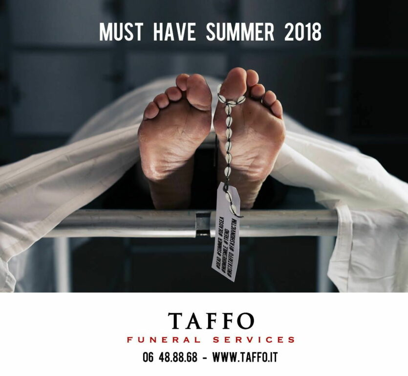
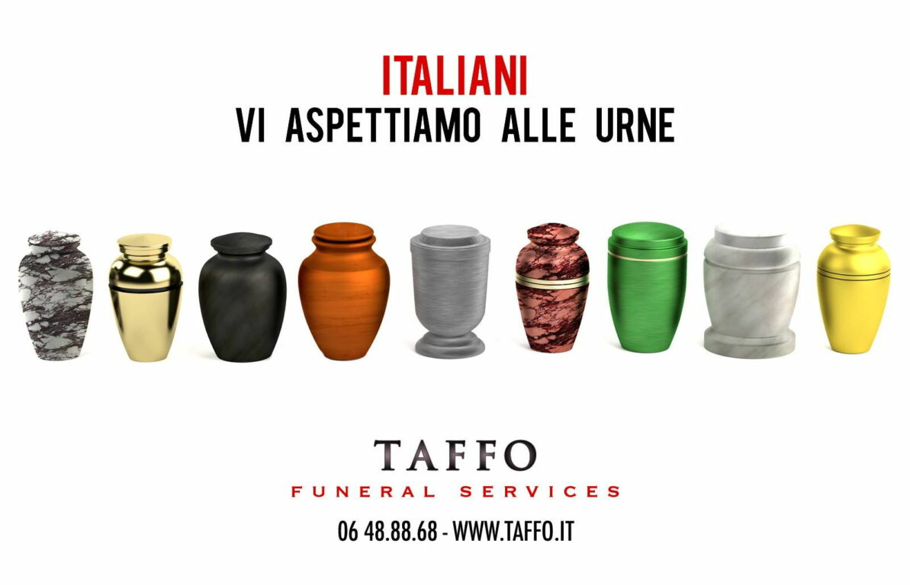
Non vaccinatevi Guidate piano, guidate sobri Proteggiti
Taffo Funeral Services è un'impresa di onoranze funebri diventata famosa per una cosa insolita nel suo settore: post sui social e manifesti che fanno ridere della morte. Non un singolo spot, ma uno stile riconoscibile, costruito annuncio dopo annuncio.
La storia comincia nei primi del Novecento: Giuseppe Taffo costruiva a mano i cofani funebri in provincia dell'Aquila. Oggi l'impresa è alla quinta generazione; nel 2022 Il Giornale la racconta attraverso Angelo Taffo e il figlio Giacomo. Il sito ufficiale indica oltre 40 sedi in Italia e un modello di franchising.
Nell'ottobre 2025 l'impresa annuncia il nuovo nome Tanuba, fusione di «Taffo» e «Anubi», il dio egizio dei defunti. Il motivo dichiarato: tutelare una community di oltre un milione di persone e fare di un cognome un simbolo collettivo.
Secondo Il Giornale (2022), l'idea venne a Giacomo Taffo dopo il terremoto dell'Aquila del 6 aprile 2009. Il limite che la famiglia dichiara: non urtare mai chi soffre per un lutto.
Dietro gli annunci c'è Riccardo Pirrone, social media manager e titolare dell'agenzia romana KiRweb. Lavora su un piano editoriale mensile con linee guida stabilite in anticipo. Prima di pubblicare si fa una domanda: «Tu, su Facebook, condivideresti una cosa così?».
Taffo scherza sulla morte […] e non sui morti.Riccardo Pirrone, intervista a Open, 2 aprile 2019
Agosto 2018. Su Facebook Taffo ripubblica una sua vecchia campagna: scaffali pieni di bare, il titolo «Non vaccinatevi» e la riga «Siamo pronti anche ad un'epidemia». Il post è dedicato, con ironia, alle mamme #novax. Secondo AGI in meno di 24 ore raccoglie 23 mila reazioni e 16.800 condivisioni.
L'annuncio dice il contrario di ciò che intende. Chi legge capisce subito il vero messaggio: vaccinatevi.
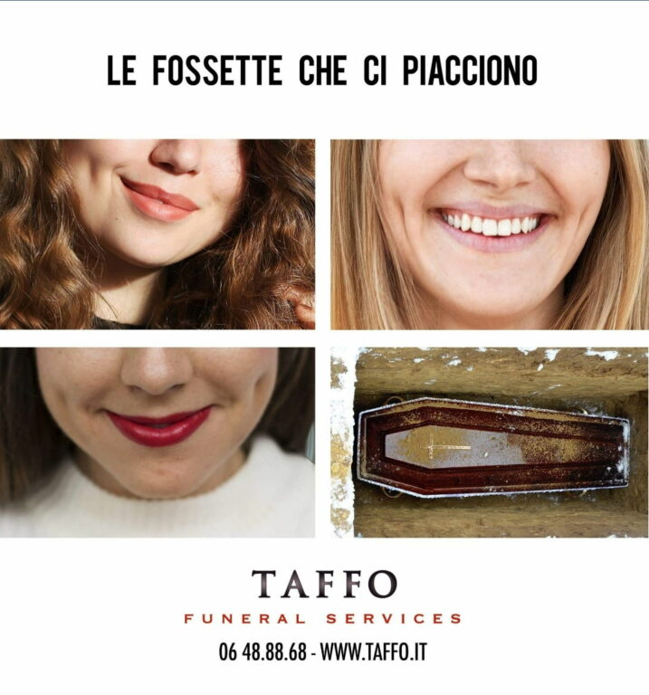
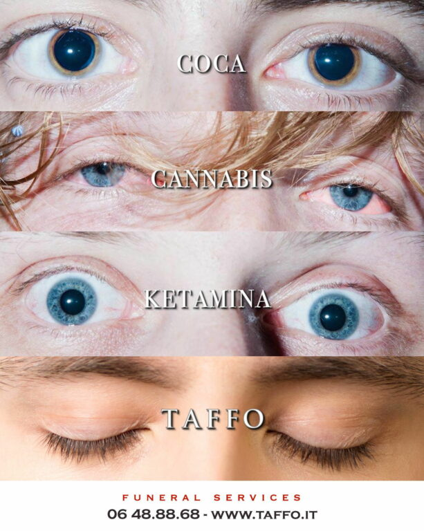
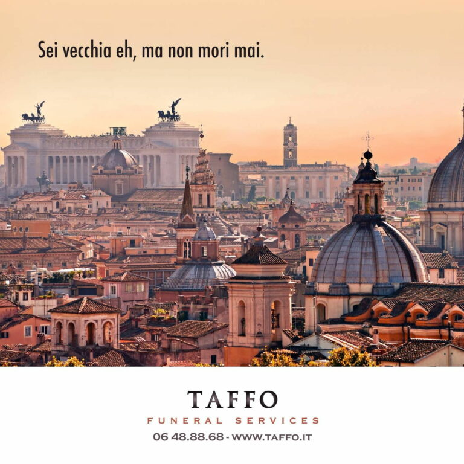
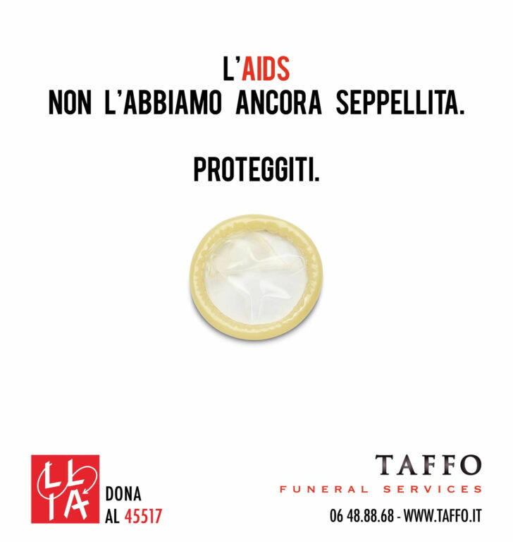
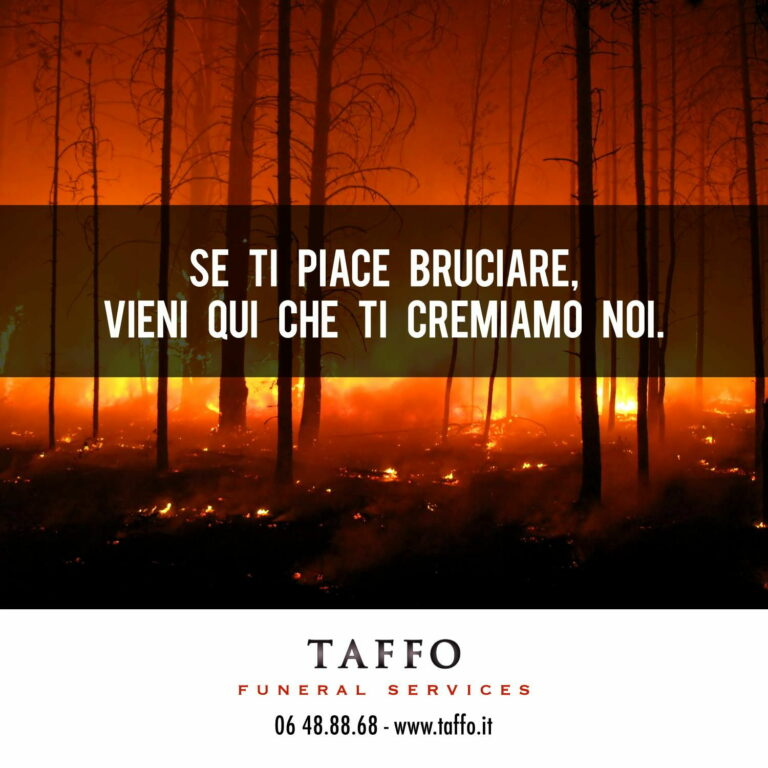
Su un manifesto un braccio con il guanto di Batman spunta da un telo bianco, sull'asfalto segnato dalle gomme. «Ragazzi, non ci fate scherzi stasera. Guidate piano, guidate sobri.»
Fonte: Blitz Quotidiano, 8 febbraio 2016
Un cartellone con un'auto per il trasporto dei feretri: «Se guidi, non bere. Non costringerci a fare gli straordinari!»
Fonte: Il Giornale, 8 novembre 2022
Durante il Covid, due bare con casse acustiche: «Voi pensate alla musica, le casse le portiamo noi». Il doppio senso è tra le casse audio e le casse da morto.
Fonte: Il Giornale, 8 novembre 2022
Antifrasi «Non vaccinatevi» significa il contrario: vaccinatevi.
Doppio senso Le urne elettorali e quelle cinerarie, le fossette e la fossa, le casse audio e le casse da morto.
Climax Coca, cannabis, ketamina… e infine Taffo.
Personificazione Roma «vecchia» che «non muore mai».
Antitesi Vita e morte, festa e funerale: il Carnevale, l'estate, la discoteca.
Paradosso Un'impresa funebre che invita a restare vivi.
| Si vede (denotazione) | Si intende (connotazione) |
|---|---|
| Scaffali pieni di bare | La conseguenza concreta, senza giri di parole |
| La scritta «Non vaccinatevi» | Il contrario: vaccinatevi |
| Fondo bianco, maiuscole nere, poche parole | Il linguaggio del manifesto e del necrologio, serio solo in apparenza |
| Logo, numero di telefono e sito in fondo | L'azienda firma la battuta e resta in mente quando servirà |
| Una mascotte sorridente a forma di bara | La morte resa familiare, quasi simpatica |
Gli annunci non descrivono servizi né prezzi. Parlano per ironia, doppi sensi e paradossi, e funzionano solo se il pubblico sta al gioco e completa la battuta: è la pubblicità obliqua di Floch, che nega quella referenziale.
Taffo ci fa ridere della morte per ricordarci di restare vivi.
La morte è un tabù: Taffo la rende nominabile. Una battuta condivisa oggi diventa il nome che si ricorda il giorno in cui serve.
| Rolls-Royce Ghost (2020) | Taffo (dal 2016) | |
|---|---|---|
| Categoria di Floch | Mitica | Obliqua |
| Che cosa si vende | Un'auto di lusso: perfezione ed esclusività | Un servizio che nessuno vuole nominare: il funerale |
| Prodotto | Nascosto, rivelato a poco a poco | Mostrato senza pudore (bare, urne), ma dentro una battuta |
| Tono | Solenne, silenzioso, sognante | Ironico, irriverente, provocatorio |
| Colori | Rosa-malva, perla, bianco seta | Bianco, nero, il rosso del logo |
| Ritmo | Lento, fluido: un film di 2 minuti | Istantaneo: una frase e un'immagine |
| Figura chiave | Metafora (la seta) | Antifrasi e doppio senso |
| Come resta in mente | Distanza: ciò che è raro e irraggiungibile | Risata e condivisione |
| Emozioni | Meraviglia, quiete, ammirazione | Sorpresa, imbarazzo, risata |
| A chi parla | Chi è già arrivato e non deve dimostrarlo | A tutti: prima o poi ne avremo bisogno |
Voi ricordate di più ciò che vi fa sognare o ciò che vi fa ridere?
| Immagine | Credito |
|---|---|
| Fotogrammi del teaser Ghost | © Rolls-Royce Motor Cars / Imagination / Cath Elliott |
| Illustrazione Post Opulence | © Rolls-Royce Motor Cars (PressClub, uso editoriale) |
| Annunci Taffo | © Taffo Funeral Services; immagini pubblicate da Open (2019) |
| Mascotte Tanuba | © Taffo / Tanuba Funeral Services, sito ufficiale |
| Schemi e quadrato di Floch | Grafica originale del progetto |
Progetto scolastico a scopo didattico, non affiliato ai marchi citati. Marchi e immagini appartengono ai rispettivi titolari. La classificazione dei due marchi è un'interpretazione di questa analisi.